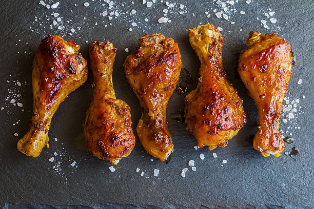

Baked Drumsticks

These easy baked chicken drumsticks are crispy on the outside,
and moist on the inside--a flavorful, cheap meal to make any time!
A quick and easy recipe using the always availble chicken drumsticks
Guaranteed to be loved by the whole family!!
Ingredients
- 6 (4 ounce) bone-in chicken drumsticks, with skin
- 6 tablespoons unsalted butter
- 1/2 cup extra-virgin olive oil, divided
- 1 pinch garlic salt, or to taste
- 1 pinch seasoned salt, or to taste
- salt and ground black pepper to taste
Steps
- Preheat the oven to 375 degrees F (190 degrees C). Line a glass baking dish with aluminum foil.
- Spread 1/4 cup of olive oil over the bottom of the prepared baking dish and line up drumsticks on top, alternating directions so that they fit. Top with 1 tablespoon of butter each, on the thick part of the chicken. Sprinkle with garlic salt, seasoned salt, salt, and pepper.
- Bake in the preheated oven for 35 minutes. Cover chicken with remaining olive oil; continue to bake until juices run clear and chicken is no longer pink in the centers, 10 to 15 more minutes. An instant-read thermometer inserted near the bone should read 165 degrees F (74 degrees C). Serve.